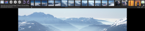
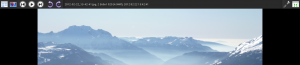
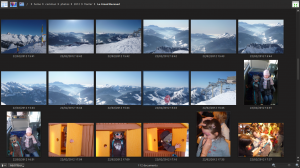
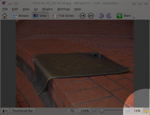

Now that KDE Applications 4.9 has been released, it is about time I blog about what changes you will find in Gwenview 2.9.
Appearance of fullscreen mode has been reworked. It no longer uses custom css-based widgets for the fullscreen toolbar. Gwenview now uses your current widget style, with a dark color scheme. I also added a subtle twist to the regular widgets in the form of some light shadows and highlights.
 Another change in this bar is the use of square thumbnails. Gwenview 2.8 used to show classic scaled-down thumbnails, but this resulted in space loss as there were empty areas around each thumbnails. Starting with 2.9, thumbnails are also cropped to fit in a square, making better use of the limited available space.
The fullscreen color scheme is a copy of Obsidian Coast theme (to avoid dependency headaches), but you can use any color scheme you want. Because of lack of time, the option is hidden for now, so you have to use kwriteconfig to set it.
For example, here is how to use the "Wonton Soup" theme:
kwriteconfig --file gwenviewrc --group FullScreen --key FullScreenColorScheme WontonSoup
The name of installed color schemes can be found in $KDEDIR/share/apps/color-schemes/, where $KDEDIR is your KDE installation folder (usually /usr). You can also pass a full path to a custom color scheme if you want.
To reset to Gwenview default color scheme, use:
kwriteconfig --file gwenviewrc --group FullScreen --key FullScreenColorScheme ""
This is probably one of the most important changes ever made in Gwenview. Before 2.9, Gwenview featured three different modes: browse, view, fullscreen. This is no longer the case in Gwenview 2.9: fullscreen is independent. This means you can now go fullscreen in browse mode.
Going fullscreen while browsing gives you a more immersive experience while you go through your pictures. It is quite nice on your regular computer, but makes even more sense when you connect your laptop to the big TV in the living room to show pictures to your guests.
Interestingly, this feature has been a long time coming. I had the idea in mind for at least two years. When I read iPhoto 11 announcement I felt like "Damn, now if I implement this, people will say I am just copying Apple!". I gave a first try at implementing it for Gwenview 2.8, but got stuck, decided to go for the transitions instead. For 2.9 I was able to resurrect and finish the work I started six months ago.
This change implied a few keyboard shortcut changes. Here are the new shortcuts:
Gwenview 2.8 got rid of scrollbars on images, and introduced a bird-eye view to pan through the image. The bird-eye view is handy, but it is in the way of the image. In Gwenview 2.9, it now automatically hides itself after a short delay, showing back only while zooming or scrolling.
When you drag images to a folder you now get a nicer preview: images are spread like a fan, giving a more natural feeling.
This is a late addition, an hidden feature I am not satisfied about yet.
Before 2.8, Gwenview used to keep the zoom and position: if you were viewing image PICT0001.jpg, zoomed to 400% and scrolled to the bottom-right corner, then when you went to PICT0002.jpg, Gwenview would keep the zoom at 400% and try to keep the scroll position to the bottom-right corner.
This changed in 2.8, an unwanted side-effect of a code rewrite to make it possible to implement transitions. Bug 291759 was filed, asking to restore remembering of zoom state and position.
With the help of others I came up with a new implementation of this feature, but after using it for a few days, I realized I personally preferred when Gwenview reseted the zoomon image changes. Thinking more about it and discussing it with others, we realized locking zoom and position makes sense when you are triaging imported images, but does not make sense when you are showing images around. Problem: both use cases are valid use cases of Gwenview :/. Since release deadline was approaching I decided to come up with the following workaround:
The default behavior remains the same as Gwenview 2.8: zoom is not locked by default. A new hidden config option has been added to toggle this behavior. You can enable it with:
kwriteconfig --file gwenviewrc --group ImageView --key ShowLockZoomButton true
When this option is enabled, a padlock button appears to the right of the zoom slider. When the padlock button is checked, zoom and position are locked when browsing images.
As I said, I am not fully satisfied with that: the zoom widget is already quite cluttered, and I don't like adding more clutter to it. We'll see if I can come up with something better/smarter for 2.10.
That's it for this version, hope you will enjoy Gwenview 2.9!
{kind=link}
{kind=link}
{kind=link}
{kind=link}
{kind=link}